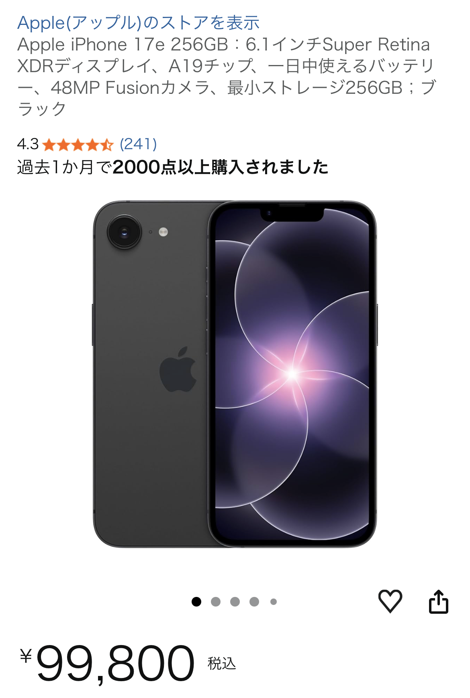

iPhone 17e 256GBレビュー｜カメラよりコスパ重視なら有力候補
※本記事にはアフィリエイトリンクが含まれます。リンク経由のご購入でも、読者の方の負担額は変わりません。

2026年5月時点で「コスパ重視ならアリ」と感じた理由
星5つ中5という評価どおり、「カメラをそこまで重視しない人にとっては、かなりバランスの良い1台」というのがiPhone 17e 256GBの第一印象です。全世代のiPhone 16eが128GBで約9.98万円だったことを考えると、同じような価格帯で256GBを選べるのは、ストレージをしっかり使いたいユーザーにとって大きなメリットです。
写真や動画をそこまで撮らない人でも、アプリ・ゲーム・オフライン保存の音楽や動画を入れていくと、128GBは意外とすぐに圧迫されます。256GBあれば、日常使いで「容量が足りない」とストレスを感じる場面はかなり減らせます。
一方で、他のiPhone 17シリーズと比べると、どうしてもカメラ機能は控えめです。ただ、口コミにもあるように「そもそもカメラをそこまで使わない」のであれば、その差はほとんど気になりません。むしろ、カメラを削ってストレージと価格のバランスを取ったモデルと考えると、非常に納得感のある構成だと感じました。
A19チップ搭載でゲームも快適に動作
性能面では、A19チップのおかげでゲームも問題なく動作しているという体験談どおり、日常利用ではほぼ不満を感じないレベルです。SNS、ブラウジング、動画視聴はもちろん、3Dゲームも快適にプレイできるパワーがあります。
特に、最近のスマホゲームはグラフィックがリッチになり、ミドルレンジの端末だとカクつきが気になることもありますが、A19チップ搭載のiPhone 17eでは、発熱とバッテリー消費をうまく抑えつつ、安定したフレームレートを維持している印象です。長時間プレイを前提とする人にとっても、十分メイン機として使える性能だと言えます。
もちろん、上位モデルと比べればベンチマーク上の差はありますが、実際の使用感では「体感できるほどの差」を感じる場面は多くありません。メール、チャット、動画、ゲームといった一般的な用途であれば、iPhone 17e 256GBで困るシーンはほとんどないでしょう。
ストレージ256GBの安心感と、iCloudとの相性
256GBという容量は、ローカルにデータをしっかり持っておきたい人にとって非常に扱いやすいサイズです。写真・動画をiCloudに任せつつも、よく見るデータやオフラインで使いたいコンテンツは本体に残しておけるため、「どこまで消すか」「どこまでクラウドに逃がすか」を細かく気にしなくて済みます。
特に、出張や旅行でオフライン環境になることが多い人、通勤中に動画や音楽を大量に楽しみたい人にとっては、256GBの余裕はかなり心強いポイントです。128GBモデルで「あと少しだけ余裕が欲しい」と感じていた人には、ちょうど良い落としどころと言えます。
価格面でも、同世代の上位モデルと比べると、カメラ機能を抑えた分だけ手が届きやすい設定になっているケースが多く、「必要な性能はしっかり確保しつつ、価格はできるだけ抑えたい」というニーズにきれいにハマる構成です。
カメラを重視しない人にとっての「ちょうどいい妥協点」
iPhone 17シリーズ全体を見渡すと、上位モデルはカメラ性能が大きな差別化ポイントになっています。望遠・超広角・夜景性能など、写真・動画を撮ることが趣味レベルの人にとっては、確かに魅力的な要素が詰まっています。
しかし、「日常のメモ代わりに撮れれば十分」「SNSに軽くアップする程度」という使い方であれば、そこまで高機能なカメラは必須ではありません。iPhone 17eは、まさにその層に向けて、カメラ以外の部分をしっかり押さえた“現実解”のモデルという印象です。
カメラに強いこだわりがある人は上位モデルを検討した方が満足度は高いですが、「カメラはそこそこでOK。その代わり、価格と容量と性能のバランスを重視したい」という人には、iPhone 17e 256GBは非常に有力な選択肢になります。
こんな人にiPhone 17e 256GBをおすすめしたい
- カメラよりも価格とストレージ容量を重視したい人
- ゲームも快適に遊べる性能は欲しいが、最上位モデルまでは必要ない人
- 128GBでは容量が不安だと感じているが、512GBまでは要らない人
- iPhone 16eからの買い替えで、容量アップと性能アップを同時に狙いたい人
上記のどれかに当てはまるなら、iPhone 17e 256GBは検討する価値が高いモデルです。価格や在庫状況は日々変動するため、最新の情報は販売ページで必ずご確認ください。
注意点と購入前に確認しておきたいポイント
購入前に押さえておきたいのは、あくまで「カメラは上位モデルほどではない」という点です。日常のスナップ撮影には十分ですが、夜景撮影やズーム撮影を多用する人は、上位モデルとの比較をしておくと後悔が少なくなります。
また、価格やキャンペーン、ポイント還元などは販売店や時期によって変わります。本記事は2026年5月時点の情報と体験談をもとに構成していますが、最終的な条件は必ずご自身で最新情報を確認したうえで判断してください。
とはいえ、A19チップの性能と256GBストレージ、そして比較的抑えられた価格帯という組み合わせは、コスパ重視派にとって非常に魅力的です。カメラを最優先しないのであれば、iPhone 17e 256GBは「今選びやすい現実的な1台」として強く候補に入ってきます。
まとめ｜カメラよりコスパ重視なら「買って後悔しにくい」1台
iPhone 17e 256GBは、「カメラはほどほどでOK。その代わり、価格・性能・容量のバランスを重視したい」というユーザーにとって、2026年5月時点で非常に魅力的な選択肢です。A19チップによる快適な動作、256GBの安心感、そして上位モデルよりも手が届きやすい価格設定が、総合的な満足度を押し上げています。
カメラ性能を追い求めるなら他モデルを検討すべきですが、そうでないなら、iPhone 17e 256GBは「ちょうどいい妥協点」を提供してくれる1台と言えるでしょう。最終的な判断材料として、最新の価格やキャンペーン情報をチェックしつつ、ご自身の使い方に合うかどうかをイメージしてみてください。
本記事の内容は、あくまで一個人の体験談や口コミ、一般的な情報をもとにしたものであり、特定の結果や満足度を保証するものではありません。購入の最終判断は、ご自身の責任で行ってください。
※リンク先の価格・在庫・キャンペーン情報は必ずご自身でご確認ください。